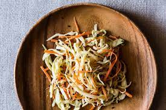

Japanese-Style Cabbage Salad

Description
This Japanese-style cabbage salad is comparable to what is served in Japanese restaurants.
It's vegan, tastes great, and goes well with Japanese and American food instead of coleslaw.
Ingredients
- ½ large head cabbage, cored and shredded
- 1 bunch green onions, thinly sliced
- 1 cup almond slivers
- ¼ cup toasted sesame seeds
Steps
- Combine cabbage, green onions, almond, and sesame seeds in a large bowl.
- Make dressing: Whisk together sesame oil, vinegar, sugar, garlic, ginger, salt, and pepper in a small bowl until sugar is dissolved.
- Pour dressing over cabbage mixture and toss until well combined.